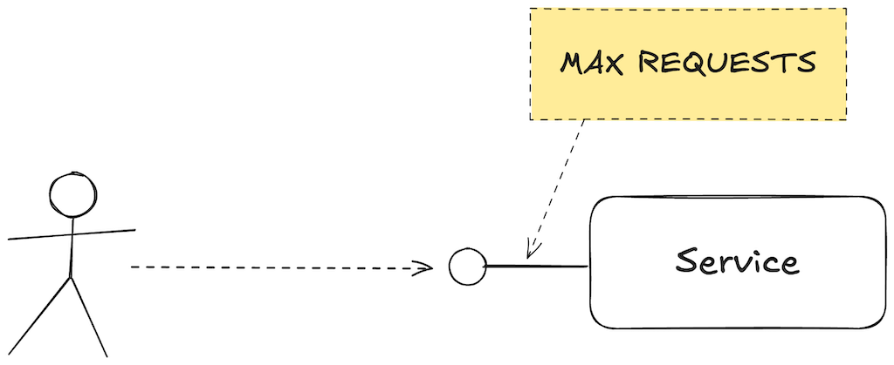
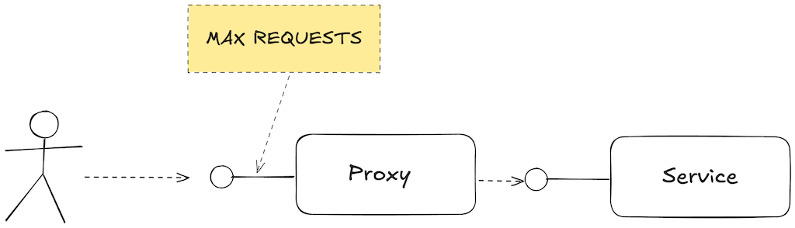

Trabe
Asís & David
https://trabe-teaching.github.io/1001-apis
Context
- We develop front and back with JS (15+ years)
- We have developed with many stacks: RoR, JEE, .NET
- We develop frameworks for other developers
APIs as a contract
- Everything has an API
- API: What a party expects from another party
Initial requisites
- We expose a service
- Service has a request limit

const MAX_REQUESTS = 100;
let requestCount = 0;
function handle(request) {
if (requestCount > MAX_REQUESTS) {
throw new Error(500);
}
requestCount++;
return data;
}
server.use((request) => handle(request)).start();
New requisite: configurable max requests
- We need a config mechanism
- Alternatives: Env vars, files, configuration service, etc.
- Each option implies a platform constraint: using files means we need FS access
const config = readYaml("path/to/config.yml");
let requestCount = 0;
function handle(request) {
if (requestCount > config.max_requests) {
throw new Error(500);
}
requestCount++;
return data;
}
server.use((request) => handle(request)).start();
New requisite: serveless
- AWS lambdas configured via env vars
- Does our API work?
- Does our platform constraint hold?
- Refactor vs workaround
Workaround
- We avoid breaking our API
- Serverless environment: write a fake config file using the env vars
writeYaml("path/to/config.yml", {
max_requests: process.env.MAX_REQUESTS
});
New requisite: cloud workers
- Breaking point!
- Our platform constraint no longer holds: cloud workers do not have FS access
- Impossible to workaround, we have to refactor
- Decouple service from config using DI
- Experience may lead you to build a DI solution from the beginning
let requestCount = 0;
function handle(request, { config }) {
if (requestCount > config.max_requests) {
throw new Error(500);
}
requestCount++;
return data;
}
const config = readYaml("path/to/config.yml");
server.use((request) => handle(request, { config })).start();
Side note: APIs and testing
- Each API must be tested in its particular way
- More decoupled APIs are easier to test
- Sometimes you can live with "worst" tests using workarounds to have simpler code
test("handle max requests", () => {
const config = {
max_requests: 1,
};
expect(handle(mockRequest, { config })).toBe(data)
expect(handle(mockRequest, { config })).toThrow(500);
expect(handle(mockRequest, { config })).toThrow(500);
});
test("handle max requests", () => {
writeYaml("path/to/config.yml", {
max_requests: 1
});
expect(handle(mockRequest)).toBe(data)
expect(handle(mockRequest)).toThrow(500);
expect(handle(mockRequest)).toThrow(500);
});
Dealing with API breaking changes
- Private APIs are "easy" to break
- Public APIs must be handled with care
- API versioning (SemVer)
- Documentation + migration guides + codemods
- Deprecations
let requestCount = 0;
const deprecatedConfig = readYaml("path/to/config.yml");
function handle(request, { config } = {}) {
if (!config) {
console.warn("handle with no config is deprecated");
}
if (requestCount > (config ?? deprecatedConfig).max_requests) {
throw new Error(500);
}
requestCount++;
return data;
}
// Deprecated
server.use((request) => handle(request)).start();
// vs. new
server.use((request) => handle(request, { config: { max_requests: 10 } })).start();
New requisite: dynamic config
max_requests based on the request metadata- Config DSL vs config as code
- Inversion of Control
max_requests:
- priority: low
max: 10
- priority: high
max: 100
let requestCount = 0;
function getMaxRequests(request, config) {
config.max_requests.find(/* predicate */).max;
}
function handle(request, { config } = {}) {
if (requestCount > getMaxRequests(request, config) {
throw new Error(500);
}
requestCount++;
return data;
}
server.use((request) => handle(request, { config: /* DSL */ })).start();
let requestCount = 0;
function handle(request, { config } = {}) {
if (requestCount > config.getMaxRequests(request)) {
throw new Error(500);
}
requestCount++;
return data;
}
function getMaxRequests(request) {
return someCalculatedMaxValue;
}
server.use((request) => handle(request, { config: { getMaxRequests } })).start();
Parting thoughts
- Final product: result of sucessive steps. Requisites almost always change
- Pragmatism vs theory: find the solution that works. Usually the basic solution is the adequate one
- Beware of the environment (platform evolution, company idionsincrasies, etc).
This was just an example
